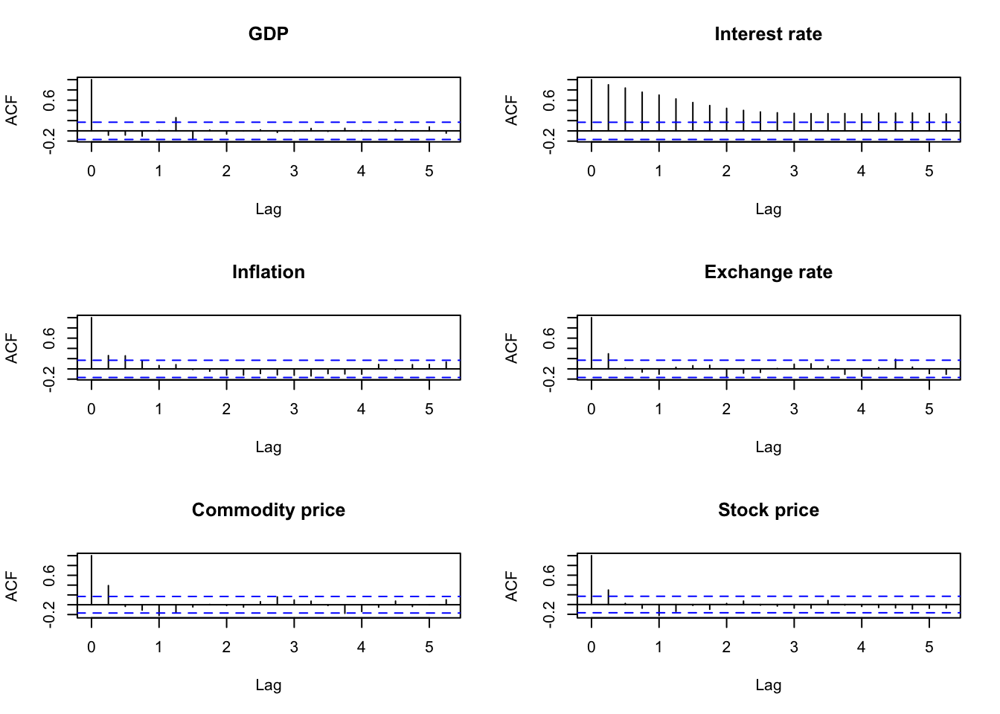
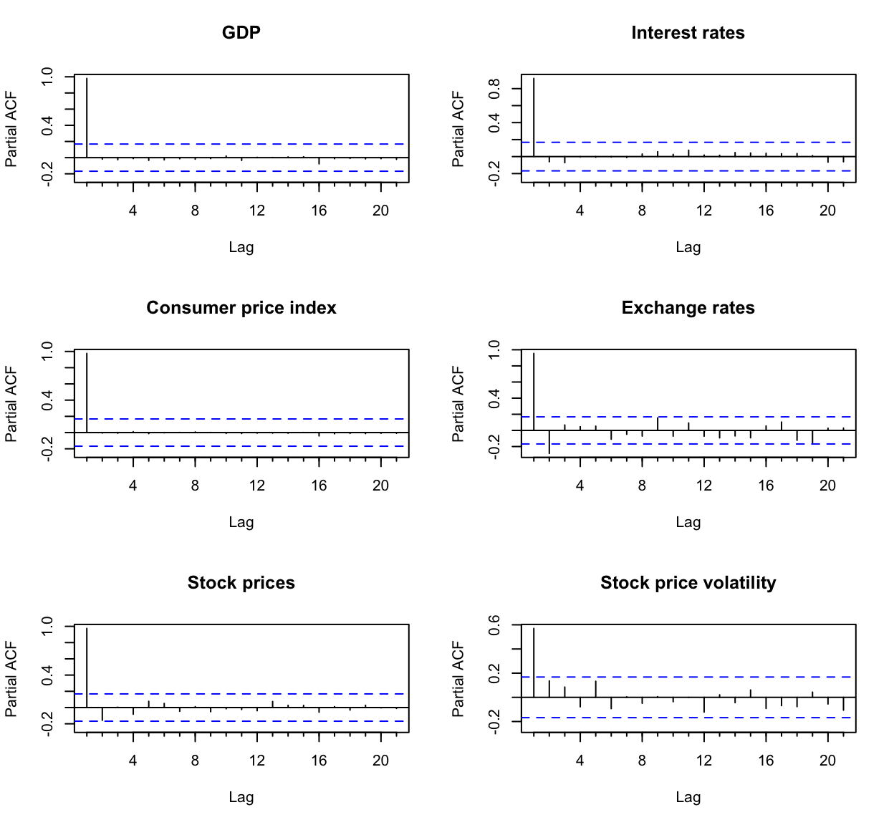

| Variable | Code | Data source |
|---|---|---|
| GDP | GGDPCVGDP | RBA |
| Interest rates | FIRMMCRTD | RBA |
| Consumer Price Index | A2325846C | ABS |
| Exchange rates | FXRUSD | RBA |
| Stock prices | ^AORD | Yahoo Finance |
The Effects of Monetary Policy Shocks on Stock Price Volatility: Evidence from the Australian Economy
Abstract. This research project aims to measure the effects of monetary policy shocks on stock price volatility using the Bayesian Structural Vector Autoregressive Model in the Australian economy from 1990 to 2023.
Keywords. Bayesian Structural VARs, Monetary policy shocks, Stock price volatility, Impulse response
Introduction
This research project aims to measure the effects of monetary policy shocks on stock price volatility using a Bayesian Structural Vector Autoregressive Model in the Australian economy from 1990 to 2023. The question addressed in this study is: How does an increase in the cash rate target affect stock price volatility in the Australian market?
The behaviour and decisions of stakeholders–including investors, businesses, and financial institutions–in financial markets are primarily affected by stock price volatility. As such, the effect of change in stock prices plays a large role in Australian economy. This study aims to measure the monetary policy shocks on stock price volatility using the Bayesian Structural Vector Autoregression model, focusing on the Australian economy.
Data
The study includes data from the Reserve Bank of Australia (RBA), the Australian Bureau of Statistics (ABS), and Yahoo Finance from 1990 to 2023, adjusted quarterly from 1990 Q1 to 2023 Q4, including 136 observations. The variables selected for our analysis include:
GDP (GDP): real GDP, expressed as per billion AUD
Interest rates (ICR): cash rate target, expressed as a percentage
Consumer price index (CPI): All groups Consumer Price Index, expressed as an index number
Exchange rates (EXR): exchange rates from AUD to USD, expressed in USD
Stock prices (STP): stock prices using the adjusted closing price of the All Ordinaries Index, expressed in AUD
Stock price volatility (VOL): the log of bipower variation calculated using the log of the sum of the
multiplication of consecutive absolute logarithmic returns of stock prices (STP) multiplied by normalisation
factor \(\frac{\pi}{2}\) where \(log(\frac{\pi}{2} \sum_{t=2}^{T} |r_{t}| \cdot |r_{t-1}|)\)
Interest rates (ICR): cash rate target, expressed as a percentage
Consumer price index (CPI): All groups Consumer Price Index, expressed as an index number
Exchange rates (EXR): exchange rates from AUD to USD, expressed in USD
Stock prices (STP): stock prices using the adjusted closing price of the All Ordinaries Index, expressed in AUD
Stock price volatility (VOL): the log of bipower variation calculated using the log of the sum of the
multiplication of consecutive absolute logarithmic returns of stock prices (STP) multiplied by normalisation
factor \(\frac{\pi}{2}\) where \(log(\frac{\pi}{2} \sum_{t=2}^{T} |r_{t}| \cdot |r_{t-1}|)\)
Table 1 shows the details of the data source.
Table 1: Data source
GDP, interest rates, consumer price index, exchange rates, stock prices and stock price volatility are plotted in Figure 1. GDP exhibits an upward trend except for a trough during COVID-19. Interest rates depict a gradual downward trend; however, from 2022 Q4, there has been a significant increase in interest rates. There is an overall upward trend of stock prices, however, with the exception during the Global Financial Crisis where the stock prices has shown great volatility by increasing and decreasing in large amount.

Figure 1: Time series plots of the variables
Table 2 demonstrates the descriptive statistics of the variables from 1990 Q1 to 2023 Q4.
| Variable | Unit | Mean | SD | Min | Max | n |
|---|---|---|---|---|---|---|
| GDP | $ billion AUD | 403.378 | 115.619 | 229.170 | 609.750 | 136 |
| Interest rates | Percentage | 4.620 | 2.922 | 0.100 | 16.923 | 136 |
| Consumer price index | Index | 88.772 | 21.859 | 56.200 | 136.100 | 136 |
| Exchange rates | $ USD | 0.754 | 0.122 | 0.512 | 1.063 | 136 |
| Stock prices | $ AUD | 4224.289 | 1809.808 | 1336.632 | 7701.124 | 136 |
| Stock price volatility | -5.093 | 0.724 | -6.584 | -2.418 | 136 |
Table 2: Summary of descriptive statistics
In our model, GDP, consumer price index, stock prices are transformed into a logarithmic scale. Stock price volatility is the log of bipower variation.
Figure 2 shows

Figure 2: Plot for the data in logarithmic scale
Diagnostic Tests
Autocorrelation/Partial autocorrelation Function Plots
The autocorrelation test is used to identify the presence of serial correlation between a variable’s current value and its lagged value, indicating that past values influence the current value.
The autocorrelation function (ACF) plots in Figure 3 shows that all the variables except for stock price volatility have non-zero autocorrelation for at least 20 lags, implying that only stock price volatility is a stationary series and the other variables are highly persistent.

Figure 3: Plots of autocorrelation functions
The partial autocorrelation function (PACF) plots in Figure 4 shows that the partial autocorrelation for all the variables are significant at the first lag. The partial autocorrelation for exchange rates is also significant at 2.

Figure 4: Plots of partial autocorrelation functions
Unit Root Test
Augmented Dickey-Fuller Test
The augmented Dickey-Fuller test of the null hypothesis of unit root nonstationarity was performed to test the presence of the unit root.
Table 3 shows that the null hypothesis was not rejected at the 1% significance level for all the variables but not for stock price volatility, implying that all the variables except for stock price volatility are nonstationary series. However, stock price volatility is the log of bipower variation and took logarithmic scale twice,
| Variable | Test statistic | Critical value | Stationarity | Lag order |
|---|---|---|---|---|
| GDP | -1.296 | -3.99 | No | 5 |
| Interest rates | -2.991 | -3.46 | No | 5 |
| Consumer price index | -2.845 | -3.99 | No | 5 |
| Exchange rates | -2.181 | -3.46 | No | 5 |
| Stock prices | -3.186 | -3.99 | No | 5 |
| Stock price volatility | -4.543 | -3.46 | Yes | 5 |
Table 3: Augmented Dickey-Fuller test results
Table 4 shows that the Augmented Dickey-Fuller test results on the first difference of the variables. We find that all the variables are unit root stationary at the 1% significance level, and conclude that all the variables are integrated of order one, \(I(1)\).
| Variable | Test statistic | Critical value | Stationarity | Lag order |
|---|---|---|---|---|
| GDP | -5.258 | -3.46 | Yes | 5 |
| Interest rates | -5.574 | -2.58 | Yes | 5 |
| Consumer price index | -6.089 | -3.46 | Yes | 5 |
| Exchange rates | -7.589 | -2.58 | Yes | 5 |
| Stock prices | -6.905 | -3.46 | Yes | 5 |
| Stock price volatility | -8.322 | -2.58 | Yes | 5 |
Table 4: Augmented Dickey-Fuller test results on the first difference
Methodology
Model Specification
This study uses a Bayesian Structural vector autoregression (BSVAR) model to measure the dynamic and contemporaneous relationships between variables. The endogenous variables in the model are the following: \[ Y_t= \begin{pmatrix} gdp_t \\ICR_t \\cpi_t \\EXP_t \\stp_t \\vol_t \end{pmatrix} \] \(Y_t\) contains six variables ordered as
(1) Real GDP, \(gdp_t\),
(2) Interest rates, \(ICR_t\),
(3) Consumer price index, \(cpi_t\),
(4) Exchange rates from AUD to USD, \(EXR_t\),
(5) Stock prices, \(stp_t\), and
(6) Stock price volatility, \(vol_t\).
(2) Interest rates, \(ICR_t\),
(3) Consumer price index, \(cpi_t\),
(4) Exchange rates from AUD to USD, \(EXR_t\),
(5) Stock prices, \(stp_t\), and
(6) Stock price volatility, \(vol_t\).
Structural Form
The Structural VAR model can be represented as follows: \[ \begin{gather} B_0Y_t = b_0 + \sum_{i=1}^{p} B_iY_{t-i} + u_t \\ u_t|Y_{t-1} \sim iid(0_N, I_N) \end{gather} \] where
\(Y_t\) is an \(N \times 1\) vector of endogenous variables at time \(t\),
\(B_0\) is an \(N \times N\) matrix capturing contemporaneous relationships between variables,
\(u_t\) is an \(N \times 1\) vector conditionally on \(Y_{t-1}\) orthogonal structural shocks,
\(N\) is the number of endogeneous variables, and \(p\) is the lag length.
\(B_0\) is an \(N \times N\) matrix capturing contemporaneous relationships between variables,
\(u_t\) is an \(N \times 1\) vector conditionally on \(Y_{t-1}\) orthogonal structural shocks,
\(N\) is the number of endogeneous variables, and \(p\) is the lag length.
Reduced Form
The VAR model can be represented as follows: \[ \begin{gather} Y_t = \mu_0 + \sum_{i=1}^{p} A_iY_{t-i} + \epsilon_t \\ \epsilon_t|Y_{t-1} \sim iid(0_N, \Sigma) \end{gather} \] where
\(Y_t\) is an \(N \times 1\) vector of endogenous variables at time \(t\),
\(A_i\) is an \(N \times N\) matrix of autoregressive slope parameters,
\(\mu_0\) is an \(N \times 1\) vector of constant terms,
\(\epsilon_t\) is an \(N \times 1\) vector of white noise error terms,
\(\Sigma\) is an \(N \times N\) covariance matrix of error terms \(\epsilon_t\), where \(\Sigma = B_0^{-1} {B_0^{-1}}'\),
\(N\) is the number of endogeneous variables, and \(p\) is the lag length.
\(A_i\) is an \(N \times N\) matrix of autoregressive slope parameters,
\(\mu_0\) is an \(N \times 1\) vector of constant terms,
\(\epsilon_t\) is an \(N \times 1\) vector of white noise error terms,
\(\Sigma\) is an \(N \times N\) covariance matrix of error terms \(\epsilon_t\), where \(\Sigma = B_0^{-1} {B_0^{-1}}'\),
\(N\) is the number of endogeneous variables, and \(p\) is the lag length.
Estimation Framework
Baseline Model
Estimation Procedure
The reduced form can be represented in a matrix form as follows: \[ \begin{gather} Y = XA + E \\ \\ E|X \sim MN_{T \times N}(0_{T \times N},\Sigma,I_T) \\ \end{gather} \]
\[ \begin{aligned} Y = \begin{bmatrix} y_{1}' \\y_{2}' \\. \\. \\. \\y_{T}' \end{bmatrix}_{T \times N} \quad A = \begin{bmatrix}\mu_{0}' \\A_{1}' \\.\\.\\.\\A_{p}' \end{bmatrix}_{K \times N} \quad X = \begin{bmatrix}\ x_{1}' \\x_{2}' \\.\\.\\.\\x_{T}' \end{bmatrix}_{T \times K} \quad x_t =\begin{bmatrix}\ 1 \\y_{t-1} \\.\\.\\.\\y_{t-p} \end{bmatrix}_{K \times 1} \quad E = \begin{bmatrix}\ \epsilon _{1}' \\\epsilon _{2}' \\.\\.\\.\\\epsilon _{T}' \end{bmatrix}_{T \times N} \end{aligned} \]
and
\(K = 1 + pN\).
\[ \]
For estimation, the Bayes’ theorem is used to derive the joint posterior distribution for \(A\) and \(\Sigma\). \[ \begin{align} \underbrace{P(A,\Sigma|Y,X)}_{\text{Posterior}} &\propto L(A,\Sigma|Y,X) \cdot P(A,\Sigma) \\ &\propto \underbrace{L(A,\Sigma|Y,X)}_{\text{Likelihood function}} \cdot \underbrace{P(A|\Sigma) \cdot P(\Sigma)}_{\text{Prior}} \end{align} \] This implies the following form for the kernel of the likelihood function: \[ \begin{align} L(A,\Sigma|Y,X) &\propto \det(\Sigma)^{-\frac{T}{2}} \cdot \exp \left\{-\frac{1}{2} tr \left[ \Sigma^{-1}(Y-XA)'(Y-XA) \right] \right\} \\ &\propto \det(\Sigma)^{-\frac{T}{2}} \\ &\times \exp \left\{-\frac{1}{2} tr \left[\Sigma^{-1}(A-\hat{A})'X'X(A-\hat{A}) \right] \right\} \\ &\times \exp \left\{-\frac{1}{2} tr \left[\Sigma^{-1}(Y-X \hat{A})'(Y-X \hat{A}) \right] \right\} \end{align} \] where \[ \begin{align} \hat{A} &= (X'X)^{-1}X'Y \\ \hat{\Sigma} &= \frac{1}{T} (Y-X \hat{A})'(Y-X \hat{A}) \end{align} \] are from the maximum likelihood estimation.
The natural-conjugate prior distribution where \(A\) is matrix normal and \(\Sigma\) follows inverse Wishart distribution has the same form as the joint posterior distribution for \(A\) and \(\Sigma\). \[ \begin{gather} p(A,\Sigma) = p(A|\Sigma) \cdot p(\Sigma) \\ \\ A|\Sigma \sim MN_{K \times N}(\underline{A},\Sigma,\underline{V}) \\ \\ \Sigma \sim IW_N(\underline{S},\underline{\nu}) \end{gather} \] where
\[ \begin{align} \underline{A} &= \left[ \mathbf{0}_{N \times 1} \quad I_N \quad \mathbf{0}_{N \times (p-1)N} \right]' \\ Var[vec(A)] &= \Sigma \otimes \underline{V} \\ \underline{V} &= \text{diag}([\kappa_2 \quad \kappa_1 (\mathbf{p}^{-2} \otimes \imath_N)]) \\ \mathbf{p} &= [1,2, ..., p], \qquad \imath_N = [1,...,1] \end{align} \]
This implies the following form for the kernel of the natural-conjugate prior distribution: \[ \begin{align} p(A,\Sigma) &= p(A|\Sigma) \cdot p(\Sigma) \\ \\ &\propto \det(\Sigma)^{-\frac{N+K+\underline{v}+1}{2}} \\ &\times \exp \left\{-\frac{1}{2}tr \left[\Sigma^{-1}(A-\underline{A})'\underline{V}^{-1}(A-\underline{A}) \right] \right\} \\ &\times \exp \left\{-\frac{1}{2}tr \left[\Sigma^{-1}\underline{S} \right] \right\} \end{align} \]
The posterior distribution is given by the product of the likelihood and the priors. \[ \begin{align} p(A,\Sigma|Y,X) &\propto L(A,\Sigma|Y,X) \cdot p(A,\Sigma) \\ \\ &\propto L(A,\Sigma|Y,X) \cdot p(A|\Sigma) \cdot p(\Sigma) \\ \\ &\propto \det(\Sigma)^{-\frac{T}{2}} \cdot \exp \left\{-\frac{1}{2} tr \left[ \Sigma^{-1}(A-\hat{A})'X'X(A-\hat{A}) \right] \right\} \cdot \exp \left\{-\frac{1}{2} tr \left[\Sigma^{-1}(Y-X \hat{A})'(Y-X \hat{A}) \right] \right\} \\ &\times \det(\Sigma)^{-\frac{N+K+\underline{v}+1}{2}} \cdot \exp\left\{-\frac{1}{2}tr[\Sigma^{-1}(A-\underline{A})'\underline{V}^{-1}(A-\underline{A})] \right\} \cdot \exp\left\{-\frac{1}{2}tr[\Sigma^{-1}\underline{S}] \right\} \\ \\ &\propto \det{(\Sigma)}^{-\frac{T+N+K+\underline{\nu}+1}{2}} \\ &\times \exp \left\{-\frac{1}{2} tr \left[\Sigma^{-1} \left[(A-\hat{A})'X'X(A-\hat{A})+(A-\underline{A})'\underline{V}^{-1}(A-\underline{A})+(Y-X\hat{A})'(Y-X\hat{A})+\underline{S} \right] \right] \right\} \\ \\ &\propto \det{(\Sigma)}^{-\frac{T+N+K+\underline{\nu}+1}{2}} \\ &\times \exp \left\{ -\frac{1}{2} tr \left[\Sigma^{-1}\left[(A-\overline{A})'\overline{V}^{-1} (A-\overline{A})+\underline{S}+Y'Y+\underline{A}'\underline{V}^{-1}\underline{A}-\overline{A}'\overline{V}^{-1} \overline{A} \right] \right] \right\} \end{align} \]
Combining the terms and completing the squares for the terms within the square brackets yields the following the joint posterior distributions for \(A\) and \(\Sigma\): \[ \begin{gather} p(A,\Sigma|Y,X) = p(A|Y,X,\Sigma) \cdot p(\Sigma|Y,X) = MNIW_{K \times N}(\overline{A}, \overline{V}, \overline{S}, \overline{\nu}) \\ \\ p(A|Y,X,\Sigma) = MN_{K \times N}(\overline{A}, \Sigma, \overline{V}) \\ \\ p(\Sigma|Y,X) = IW_N(\overline{S},\overline{\nu}) \\ \end{gather} \]
where the parameter of the joint posterior distribution are the following: \[ \begin{align} \overline{V} &= (X'X + \underline{V}^{-1})^{-1} \\ \overline{A} &= \overline{V}(X'Y + \underline{V}^{-1}\underline{A}) \\ \overline{\nu} &= T + \underline{\nu} \\ \overline{S} &= \underline{S} + Y'Y + \underline{A}'\underline{V}^{-1}\underline{A} - \overline{A}'\overline{V}^{-1}\overline{A} \end{align} \]
Gaussian random walk process
To check whether the algorithm is replicable, bi-variate Gaussian random walk process containing 1,000 observations was simulated.

See R code
# Specify the prior distribution
############################################################
kappa.1 <- 0.02^2
kappa.2 <- 100
A.prior <- matrix(0, nrow(A.hat), ncol(A.hat))
A.prior[2:(N+1),] <- diag(N)
V.prior <- diag(c(kappa.2, kappa.1*((1:p)^(-2))%x%rep(1,N)))
S.prior <- diag(diag(Sigma.hat))
nu.prior <- N+1
# Matrix normal-inverse Wishart posterior parameters
############################################################
V.bar.inv <- t(X)%*%X + diag(1/diag(V.prior))
V.bar <- solve(V.bar.inv)
A.bar <- V.bar%*%(t(X)%*%Y + diag(1/diag(V.prior))%*%A.prior)
nu.bar <- nrow(Y) + nu.prior
S.bar <- S.prior + t(Y)%*%Y + t(A.prior)%*%diag(1/diag(V.prior))%*%A.prior - t(A.bar)%*%V.bar.inv%*%A.bar
S.bar.inv <- solve(S.bar)
# Draw Posterior distribution
############################################################
## Draw from the Reduced Form
### Draw Sigma from the inverse Wishart distribution
Sigma.posterior <- rWishart(S, df=nu.bar, Sigma=S.bar.inv)
Sigma.posterior <- apply(Sigma.posterior,3,solve)
Sigma.posterior <- array(Sigma.posterior,c(N,N,S))
### Draw A from matrix-variate normal distribution
A.posterior <- array(rnorm(prod(c(dim(A.bar),S))),c(dim(A.bar),S))
# Initialise arrays to store posterior draws
B0.posterior <- array(NA, c(N,N,S))
B1.posterior <- array(NA, c(N,K,S))
for (s in 1:S){
## Draw from the Structural Form
### Draw B0
cholSigma.s <- chol(Sigma.posterior[,,s])
L <- t(chol(V.bar))
B0.posterior[,,s] <- solve(t(cholSigma.s))
A.posterior[,,s] <- A.bar + L%*%A.posterior[,,s]%*%cholSigma.s
### Draw Bplus
B1.posterior[,,s] <- B0.posterior[,,s]%*%t(A.posterior[,,s])
}
# Identification via sign restrictions
############################################################
# Generate corresponding R matrix
sign.restrictions <- c(1,1)
R <- diag(sign.restrictions)
# Initialise arrays for store Q identified estimates
i.vec <- c()
Q.iden <- array(NA, c(N,N,S))
B0.iden <- array(NA, c(N,N,S))
B1.iden <- array(NA, c(N,K,S))
for (s in 1:S){
B0.tilde <- B0.posterior[,,s]
B1.tilde <- B1.posterior[,,s]
sign.restrictions.do.not.hold = TRUE
i=1
while (sign.restrictions.do.not.hold){
X <- matrix(rnorm(N*N), N, N)
QR <- qr(X, tol=1e-10)
Q <- qr.Q(QR, complete=TRUE)
R <- qr.R(QR, complete=TRUE)
Q <- t(Q%*%diag(sign(diag(R))))
B0 <- Q%*%B0.tilde
B1 <- Q%*%B1.tilde
B0.inv <- solve(B0)
check <- all(c(B0[1,1], B0[2,2]) > 0)
if (check){sign.restrictions.do.not.hold=FALSE}
i=i+1
}
i.vec <- c(i.vec, i)
Q.iden[,,s] <- Q
B0.iden[,,s] <- B0
B0.mean <- apply(B0.iden, 1:2, mean)
B1.iden[,,s] <- B1
B1.mean <- apply(B1.iden, 1:2, mean)
}| 0.6395591 | -0.0220170 |
| 0.0402778 | 0.6467075 |
| 0.0346082 | 0.6354305 | -0.0212149 |
| 0.0155527 | 0.0446449 | 0.6432964 |
| 0.0537239 | 0.0189261 |
| 0.9939985 | 0.0071675 |
| 0.0008838 | 0.9946591 |
| 0.9635555 | -0.0116637 |
| -0.0116637 | 0.9415589 |
Extended Model: Student’s t-distributed errors
Estimation Procedure
Stock price volatility
\[ \begin{align} E_T &\sim t_N(0, \Sigma, \nu) \end{align} \] Then, the reduced form can be represented in a matrix form as follows: \[ \begin{gather} Y = XA + E \\ \\ E|X, \lambda \sim MN_{T \times N}(0_{T \times N},\Sigma,\lambda I_T) \end{gather} \] where lambda is inverse gamma 2 distributed with shape and ..
\[ \lambda \sim IG2(s_{\lambda}, \nu_{\lambda}) \]
The kernel of the likelihood function follows as: \[ \begin{align} L(A,\Sigma,\lambda|Y,X) &\propto \det(\Sigma)^{-\frac{T}{2}} \cdot \det(\lambda I_T)^{-\frac{N}{2}} \cdot \exp \left\{-\frac{1}{2} \text{tr} \left[\Sigma^{-1}(Y-XA)'(\lambda I_T)^{-1}(Y-XA) \right] \right\} \end{align} \]
The conditional posterior distribution of \(\lambda\): \[ \begin{align} p(\lambda|Y,X,A,\Sigma) &\propto L(A,\Sigma,\lambda|Y,X) \cdot p(\lambda) \\ &\propto \det(\Sigma)^{-\frac{T}{2}} \cdot \det(\lambda I_T)^{-\frac{N}{2}} \cdot \exp \left\{-\frac{1}{2} tr[\Sigma^{-1} (Y-XA)' (\lambda I_T)^{-1} (Y-XA)] \right\} \\ &\times \lambda^{-\frac{\underline{\nu_{\lambda}}+2}{2}} \cdot \exp \left\{-\frac{1}{2}\frac{\underline{s_{\lambda}}}{\lambda} \right\} \\ \\ &\propto \det(\Sigma)^{-\frac{T}{2}} \cdot \det(I_T)^{-\frac{N}{2}} \cdot \exp \left\{-\frac{1}{2}\frac{1}{\lambda} tr[\Sigma^{-1}(Y-XA)'(Y-XA)] \right\} \\ &\times \lambda^{-\frac{TN}{2}} \cdot \lambda^{-\frac{\underline{\nu_{\lambda}}+2}{2}} \cdot \exp \left\{-\frac{1}{2}\frac{\underline{s_{\lambda}}}{\lambda} \right\} \\ \\ &\propto \det(\Sigma)^{-\frac{T}{2}} \cdot \det(I_T)^{-\frac{N}{2}} \cdot \lambda^{-\frac{TN+\underline{\nu_{\lambda}}+2}{2}} \cdot \exp \left\{-\frac{1}{2}\frac{1}{\lambda} [tr(\Sigma^{-1}(Y-XA)'(Y-XA)) + \underline{s_{\lambda}}] \right\} \end{align} \] This follows \[ \begin{align} \lambda|Y,X, A,\Sigma &\sim IG2(\overline{s_{\lambda}},\overline{\nu_{\lambda}}) \end{align} \] where \[ \begin{align} \overline{s_{\lambda}} &= tr[\Sigma^{-1}(Y-XA)'(Y-XA)] + \underline{s_{\lambda}} \\ \overline{\nu_{\lambda}} &= \underline{\nu_{\lambda}} + TN \end{align} \] The conditional posterior distribution of \(A\) and \(\Sigma\):
\[ \begin{align} p(A,\Sigma|Y,X,\lambda) &\propto L(A,\Sigma|Y,X,\lambda) \cdot p(A,\Sigma) \\ \\ &\propto L(A,\Sigma|Y,X,\lambda) \cdot p(A|\Sigma,\lambda) \cdot p(\Sigma) \\ \\ &\propto \det(\Sigma)^{-\frac{T}{2}} \cdot \det(\lambda I_T)^{-\frac{N}{2}} \cdot \exp \left\{-\frac{1}{2} tr[\Sigma^{-1} (Y-XA)' (\lambda I_T)^{-1} (Y-XA) ] \right\} \\ &\times \det(\Sigma)^{-\frac{N+k+\underline{\nu}+1}{2}} \cdot \exp \left\{-\frac{1}{2}tr[\Sigma^{-1}(A-\underline{A})'\underline{V}^{-1}(A-\underline{A})] \right\} \cdot \exp \left\{ -\frac{1}{2}tr[\Sigma^{-1}\underline{S}] \right\} \\ \\ &\propto \det(\Sigma)^{-\frac{T+N+K+\underline{\nu}+1}{2}} \cdot \det(\lambda I_T)^{-\frac{N}{2}} \\ &\times \exp \left\{-\frac{1}{2} tr[\Sigma^{-1}(Y'(\lambda I_T)^{-1}Y - 2A'X'(\lambda I_T)^{-1}Y + A'X'(\lambda I_T)^{-1}XA + A'\underline{V}^{-1}A -2A'\underline{V}^{-1}\underline{A} + \underline{A}'\underline{V}^{-1}\underline{A} + \underline{S})] \right\} \end{align} \] This follows: \[ \begin{gather} p(A,\Sigma|Y,X,\lambda) = p(A|Y,X,\Sigma, \lambda) \cdot p(\Sigma|Y,X,\lambda) = MNIW_{K \times N}(\overline{A}, \overline{V}, \overline{S}, \overline{\nu}) \\ \\ p(A|Y,X,\Sigma,\lambda) = MN_{K \times N}(\overline{A}, \Sigma, \overline{V}) \\ \\ p(\Sigma|Y,X,\lambda) = IW_N(\overline{S},\overline{\nu}) \\ \end{gather} \] where \[ \begin{align} \overline{V} &= [X'(\lambda I_T)^{-1}X + \underline{V}^{-1}]^{-1} \\ \overline{A} &= \overline{V}[X'(\lambda I_T)^{-1}Y + \underline{V}^{-1}\underline{A}] \\ \overline{S} &= Y'(\lambda I_T)^{-1}Y + \underline{A}'\underline{V}^{-1}\underline{A} - \overline{A}'\overline{V}^{-1}\overline{A} + \underline{S} \\ \overline{\nu} &= \underline{\nu} + T \end{align} \]
Gaussian random walk process
Gibbs Sampler
Initialise \(\lambda\) at \(\lambda^{(0)}\) From S = 1,
- Draw \(\Sigma^{(s)} \sim P(\Sigma|Y,X,\lambda^{(s-1)})\) from the \(IW_N(\overline{S},\overline{\nu})\) distribution
- Draw \(A^{(s)} \sim P(A|Y,X,\Sigma^{(s)},\lambda^{(s-1)})\) from the \(MN_{K \times N}(\overline{A},\Sigma^{(s)}, \overline{V})\) distribution
- Draw \(\lambda^{(s)} \sim P(\lambda|Y,X,A^{(s)},\Sigma^{(s)})\) from \(IG2(\overline{s_{\lambda}},\overline{\nu_{\lambda}})\) distribution
To check whether the algorithm is replicable, bi-variate Gaussian random walk process containing 1,000 observations was simulated.
See R code
set.seed(2024)
RW11 <- arima.sim(model = list(order = c(0, 1, 0)), n=1000, mean=0, sd=1)
RW22 <- arima.sim(model = list(order = c(0, 1, 0)), n=1000, mean=0, sd=1)
RW.1 <- cbind(RW11,RW22)
Y <- RW.1[2:nrow(RW.1),]
# Create Y and X matries
#########################################################
Y <- RW.1[2:nrow(RW.1),]
X <- matrix(1, nrow(Y), 1)
X <- cbind(X,RW.1[2:nrow(RW.1)-1,])
N <- 2 # number of variables
p <- 1 # number of lags
K <- 1+p*N
S <- 1000 # sample size
sign.restrictions <- c(1,1)
# Calculate the MLE
############################################################
A.hat <- solve(t(X)%*%X)%*%t(X)%*%Y
Sigma.hat <- t(Y-X%*%A.hat)%*%(Y-X%*%A.hat)/nrow(Y)
# Specify prior distribution
############################################################
kappa.1 <- 0.02^2
kappa.2 <- 100
A.prior <- matrix(0, nrow(A.hat), ncol(A.hat))
A.prior[2:(N+1),] <- diag(N)
V.prior <- diag(c(kappa.2, kappa.1*((1:p)^(-2))%x%rep(1,N)))
S.prior <- diag(diag(Sigma.hat))
nu.prior <- N+1
s.prior.lambda <- 5 # assume that it is fixed
nu.prior.lambda <- 5 # assume that it is fixed
lambda <- s.prior.lambda/rchisq(1, nu.prior.lambda)
# Initialise arrays to store posterior draws
Sigma.posterior <- array(NA, c(N,N,S))
A.posterior <- array(NA, c(K,N,S))
lambda.posterior <- rep(NA, S)
B0.posterior <- array(NA, c(N,N,S))
B1.posterior <- array(NA, c(N,K,S))
for (s in 1:S){
# Matrix normal-inverse Wishart posterior parameters
############################################################
V.bar.inv <- t(X)%*%X/lambda + diag(1/diag(V.prior))
V.bar <- solve(V.bar.inv)
A.bar <- V.bar%*%(t(X)%*%Y/lambda + diag(1/diag(V.prior))%*%A.prior)
nu.bar <- nrow(Y) + nu.prior
S.bar <- S.prior + t(Y)%*%Y/lambda + t(A.prior)%*%diag(1/diag(V.prior))%*%A.prior - t(A.bar)%*%V.bar.inv%*%A.bar
S.bar.inv <- solve(S.bar)
# Draw Posterior distribution
############################################################
## Draw from the Reduced Form
### Draw Sigma from the inverse Wishart distribution
Sigma.posterior.inv <- rWishart(1, df=nu.bar, Sigma=S.bar.inv)[,,1]
Sigma.posterior[,,s] <- solve(Sigma.posterior.inv)
### Draw A from matrix-variate normal distribution
A.posterior[,,s] <- matrix(mvtnorm::rmvnorm(1, mean=as.vector(A.bar), sigma=Sigma.posterior[,,s]%x%V.bar), ncol=N)
#A.posterior[,,s] <- matrix(MASS::mvrnorm(1, as.vector(A.bar), Sigma.posterior[,,s]%x%V.bar), ncol=N)
### Draw lambda from inverse gamma 2 distribution
s.posterior.lambda <- sum(diag(Sigma.posterior.inv%*%t(Y-X%*%A.posterior[,,s])%*%(Y-X%*%A.posterior[,,s]))) + s.prior.lambda
nu.posterior.lambda <- nrow(Y)*2 + nu.prior.lambda
lambda <- s.posterior.lambda / rchisq(1, nu.posterior.lambda)
lambda.posterior[s] <- lambda
## Draw from the Structural Form
### Draw B0
cholSigma.s <- chol(Sigma.posterior[,,s])
B0.posterior[,,s] <- solve(t(cholSigma.s))
### Draw Bplus
B1.posterior[,,s] <- B0.posterior[,,s]%*%t(A.posterior[,,s])
}
# Identification via sign restrictions
############################################################
# Generate corresponding R matrix
sign.restrictions <- c(1,1)
R <- diag(sign.restrictions)
# Initialise arrays for storage matrices
i.vec <- c()
Q.iden <- array(NA, c(N,N,S))
B0.iden <- array(NA, c(N,N,S))
B1.iden <- array(NA, c(N,K,S))
for (s in 1:S){
B0.tilde <- B0.posterior[,,s]
B1.tilde <- B1.posterior[,,s]
sign.restrictions.do.not.hold = TRUE
i=1
while (sign.restrictions.do.not.hold){
X <- matrix(rnorm(N*N), N, N)
QR <- qr(X, tol=1e-10)
Q <- qr.Q(QR, complete=TRUE)
R <- qr.R(QR, complete=TRUE)
Q <- t(Q %*% diag(sign(diag(R))))
B0 <- Q%*%B0.tilde
B1 <- Q%*%B1.tilde
B0.inv <- solve(B0)
check <- all(c(B0[1,1], B0[2,2]) > 0)
if (check){sign.restrictions.do.not.hold=FALSE}
i=i+1
}
i.vec <- c(i.vec, i)
Q.iden[,,s] <- Q
B0.iden[,,s] <- B0
B0.mean <- apply(B0.iden, 1:2, mean)
B1.iden[,,s] <- B1
B1.mean <- apply(B1.iden, 1:2, mean)
}| 0.8765303 | 0.0103838 |
| 0.0102820 | 0.8870493 |
| 0.0439633 | 0.8717085 | 0.0110613 |
| 0.0184024 | 0.0161803 | 0.8826846 |
| 0.0496270 | 0.0178939 |
| 0.9944672 | 0.0068237 |
| 0.0007951 | 0.9950129 |
| 0.5925605 | -0.0067195 |
| -0.0067195 | 0.5793049 |
| x |
|---|
| 1.859239 |